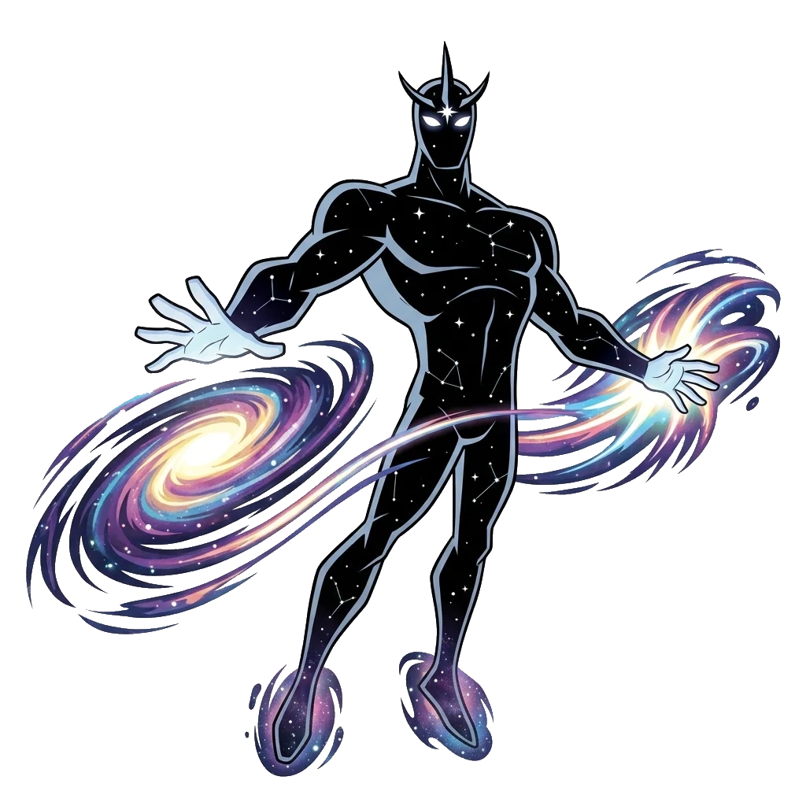

ALIEN X
- Espécie: Sapien Celestial
- Planeta: Centro da Criação
- Habilidade: Onipotência e Manipulação da Realidade
- Elemento: Cósmico
- Tipo: Onipotente
← Voltar para a Coleção
ALIEN X
"Serena, Bellicus... precisamos entrar em um acordo agora!"
Visão Geral
Alien X é a amostra de DNA de um Sapien Celestial vindo do Centro da Criação. Ele possui um corpo humanoide completamente negro coberto por estrelas e galáxias, sendo o alienígena mais poderoso de todo o Omnitrix — porém, para agir, Ben precisa convencer as duas personalidades internas (Bellicus e Serena) a concordarem com ele.
Habilidades e Poderes
Possui onipotência quase absoluta, podendo alterar o espaço, o tempo e a própria realidade apenas com o pensamento, além de recriar universos inteiros, teletransportar-se, multiplicar-se e ser completamente invulnerável a qualquer tipo de dano.